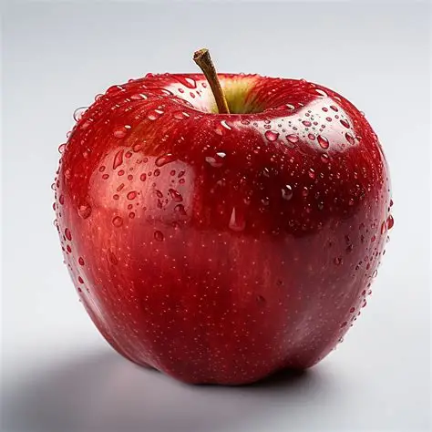
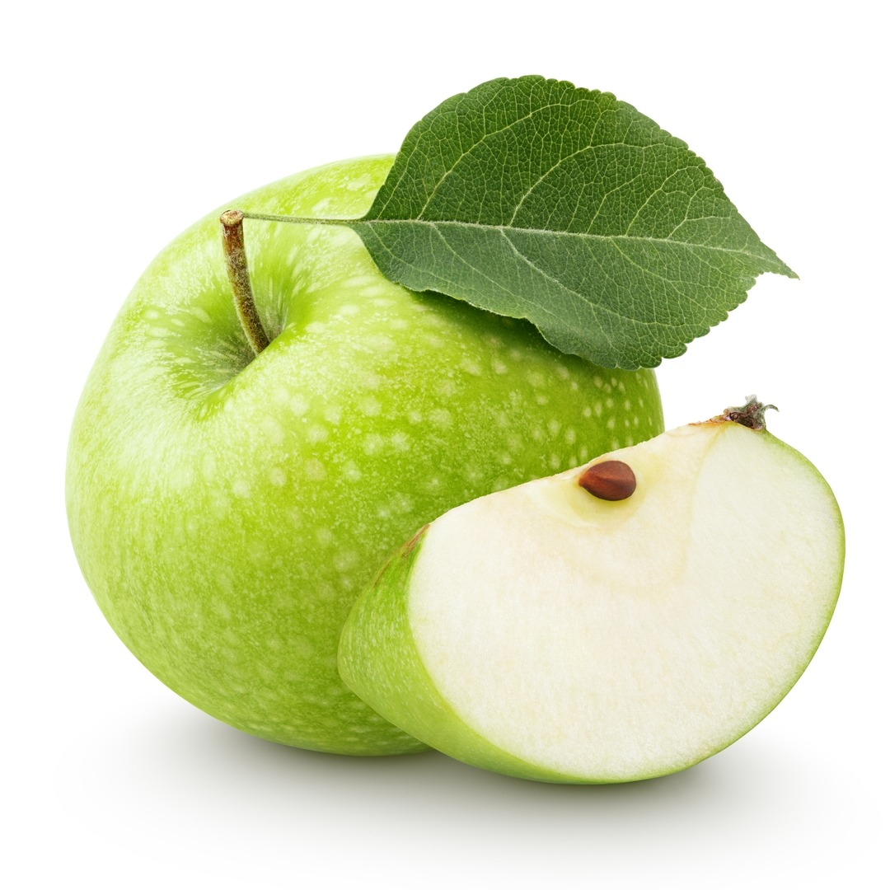
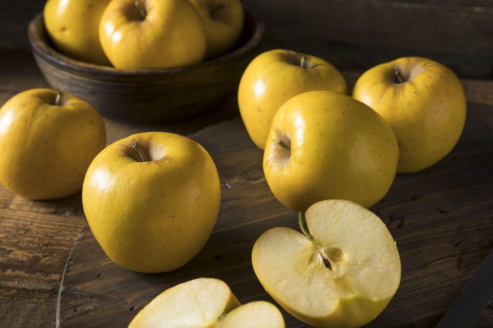

Red apples are perhaps the most iconic and widely recognized variety. They are often associated with sweetness and can range in shade from a light blush to a deep, rich crimson. The red color in apples is primarily due to the presence of pigments called anthocyanins. Some popular red apple varieties include Red Delicious, Fuji, Jonathan, and Rome Beauty.

.webp)
Green apples offer a refreshing tartness that adds a zing to any dish or snack. These apples can vary in shade, from a pale green to a vibrant, almost neon green. The green color is attributed to the presence of chlorophyll, the same pigment responsible for the green color in plants. Well-known green apple varieties include Granny Smith, Golden Delicious, and McIntosh.

.webp)
Yellow apples have a lovely golden hue that exudes sweetness and brightness. These apples can range from a pale yellow to a deep, almost golden color. The yellow color is attributed to a combination of pigments, including carotenoids and flavonoids. Popular yellow apple varieties include Yellow Transparent, Golden Delicious, and Santana.
